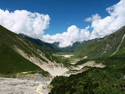

→Venice:
It was a foggy morning in Venice when I set out to explore the labyrinthine streets of this enchanting city. Armed with a map and a sense of adventure, I wandered through narrow alleys and crossed countless bridges, immersing myself in the timeless beauty of the floating city.
As the day unfolded, I found myself completely lost, far away from the bustling tourist spots. Instead, I stumbled upon hidden gems a quaint café with the best espresso, a small art gallery showcasing local talent, and a charming bookstore where the owner passionately spoke about Venetian literature.One chilly morning, I found myself sipping tea with a local Sherpa family, listening to their tales of mountaineering adventures and spiritual beliefs. Their warmth and hospitality amidst the harsh conditions left a lasting impression on me. Reaching the summit, I was greeted by a breathtaking panorama of endless peaks, prayer flags fluttering in the wind, and a profound sense of accomplishment.
Embracing the unexpected turns, I spent the day meeting locals, sharing stories, and savoring the true essence of Venice. Sometimes, getting lost is the best way to find the heart of a city.

→Under the Northern Lights:
In the heart of Lapland, under the vast Arctic sky, I witnessed one of nature's most magnificent spectacles – the Northern Lights. Wrapped in layers of warm clothing, I stood in awe as the night sky came alive with dancing hues of green, purple, and pink.
As the lights flickered and moved gracefully, I felt a deep connection with the universe. Surrounded by snow-capped mountains and the silence of the Arctic wilderness, I was reminded of the sheer beauty and vastness of our planet. It was a moment of pure magic, etched into my memory forever.One chilly morning, I found myself sipping tea with a local Sherpa family, listening to their tales of mountaineering adventures and spiritual beliefs. Their warmth and hospitality amidst the harsh conditions left a lasting impression on me. Reaching the summit, I was greeted by a breathtaking panorama of endless peaks, prayer flags fluttering in the wind, and a profound sense of accomplishment.
→A Journey through the Himalayas
Trekking through the rugged trails of the Himalayas, I discovered the true meaning of perseverance and serenity. Each step brought me closer to the snow-capped peaks and the vibrant culture of the mountain villages. One chilly morning, I found myself sipping tea with a local Sherpa family, listening to their tales of mountaineering adventures and spiritual beliefs. Their warmth and hospitality amidst the harsh conditions left a lasting impression on me. Reaching the summit, I was greeted by a breathtaking panorama of endless peaks, prayer flags fluttering in the wind, and a profound sense of accomplishment.One chilly morning, I found myself sipping tea with a local Sherpa family, listening to their tales of mountaineering adventures and spiritual beliefs. Their warmth and hospitality amidst the harsh conditions left a lasting impression on me. Reaching the summit, I was greeted by a breathtaking panorama of endless peaks, prayer flags fluttering in the wind, and a profound sense of accomplishment. The Himalayas taught me that the journey is as important as the destination, and the mountains have a way of teaching lessons that transcend words.



→Sailing the Greek Isles:
With the salty breeze in my hair and the sun kissing my skin, I embarked on a sailing adventure through the Greek Isles. Each island had its unique charm – from the ancient ruins of Athens to the picturesque beaches of Santorini and the lush greenery of Corfu.Sailing from one island to another, I discovered the rich history, indulged in delectable cuisine, and danced to traditional music under the starlit sky. The crystal-clear waters invited me for refreshing swims, and the friendly locals shared their love for their homeland, making me feel like a part of their vibrant culture.As I sailed into the sunset, I marveled at the timeless beauty of Greece and realized that sometimes, the best way to experience a country is through the freedom of the open sea.I found myself sipping tea with a local Sherpa family, listening to their tales of mountaineering adventures and spiritual beliefs. Their warmth and hospitality amidst the harsh conditions left a lasting impression on me. Reaching the summit, I was greeted by a breathtaking panorama of endless peaks, prayer flags fluttering in the wind